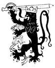
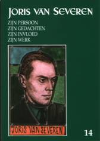

> nieuwsbrief > 2010- nr 4
Inhoud
Zoals
een
bloem, die slechts worden moest wat zij als zaad reeds was, zo hebben
ook wij
geen andere opdracht in dit leven dan ons zelf
te worden.
Onder dit motto creëerden Theo en
De rol van Henri Bruning in het Nederlandse
geestesleven
tijdens het interbellum en niet het minst binnen de Noord-Nederlandse
tak van
het Verdinaso wordt aldus uitvoerig gedocumenteerd en
geïllustreerd.
Evenzo de infame wijze waarop gepoogd Henri
Bruning na
de Tweede Wereldoorlog monddood te maken.
15e
historische beurs Vlaamse Beweging

Ze is
stilaan een traditie geworden, deze historische
boekenbeurs rond de Vlaamse en Heel-Nederlandse Beweging. Als steeds
gaat ze
door in de feestzaal Nilania, Kesselsesteenweg 52 te 2560 Nijlen en dit
jaar op
zondag 17 oktober. Ook ons
Studiecentrum heeft er een ruime stand. Bij de beurs van 1999 was ons
Studiecentrum trouwens de begunstigde. Dit jaar komt de opbrengst toe
aan de
Vlaamse Vrienden-kring Kempenland.
Sommige opstellen geven er blijk van dat de
respectievelijke auteurs moeite gedaan hebben om zich in te leven in
de tijd
van toen en hun onderwerp met de nodige zin voor nuances hebben weten
te
benaderen. Enkele auteurs evenwel hadden hun bijdrage
misschien
beter voorbehouden voor een heruitgave van Johan Anthierens Vlaamsche Kronijken van destijds.
Wanneer je vatstelt dat met de omschrijving opperzwartrok Cyriel
Verschaeve bedoeld
wordt en je dubieuze nadere informatie aangereikt krijgt over een
beruchte
Ernest van der Hallen, dan weet je het wel en vraag je je in gemoede
af of
men bij de Academia Press afgestapt is van haar verondersteld
academisch
niveau.
Daar er in deze bundel essays gewijd zijn
aan o.m.
Bert Peleman, Wies Moens, Ward Hermans, Blanka Gyselen en Pol le Roy,
komen
Joris van Severen en zijn Verdinaso vanzelfsprekend op meerdere
plaatsen aan
bod. Het begint al in de als voorwoord bedoelde
bijdrage
van Lukas de Vos en Yves TSjoen, Voor
mijter en heerd. Kiezen in zwarte tijden: Kristus-Koning of
collaboratie
(pp. 11-12). Daar wordt voorwaar ruimschoots geciteerd uit onze Nieuwsbrief Joris
van Severen (nr.
4/2005), waarin we de dominicaan Albrecht Boucquillon (1915-1986) aan
het woord
lieten aan de hand van omstreeks 1935 neergeschreven notities uit zijn
noviciaatjaren.
Teneinde de dingen binnen hun context te
houden
hernemen we vooreerst onze inleiding tot en de tekst van Boucquillons
notities,
als gepubliceerd in onze Nieuwsbrief 4/2005:
In het verleden konden we reeds enkele
bijdragen
publiceren waaruit bleek hoezeer binnen de katholieke actieorganisaties
geworsteld werd met de ergens toch wel als nauw verwant ervaren
ideeën
waarvoor
het Verdinaso stond en die het poogde te belichamen.
Met de
hieronder opgenomen bijdrage uit de nalatenschap van de dominicaan
E.P.
Albrecht Boucquillon is dit andermaal het geval. Het betreft een
schriftje
(19 x
1. Wij klagen in het Dinaso aan, zijn heidens
nationaliteitenprincipe dat aan iedere natie het natuurrecht toekent
een Staat
te vormen. Het Dinaso beweert dat van natuurswege de Dietse Natie (t
is te
zeggen Noord- en Zuid-Nederland en Frans-Vlaanderen) het recht heeft,
om verenigd
te worden uit de huidige Statenversplintering in de éne Dietse
Volksstaat. Maar
wij, als trouwe onderdanen van de Kerk, buigen waar de hiërarchie
(dus
ook de
bisschoppen) spreekt. Dat alleen erkennen we, meer niet!
2. Wij klagen aan zijn Staatsabsolutisme. Het
liberalisme
loochende de verplichtingen van de enkeling tegenover de maatschappij;
het
ontkende de taak van de gemeenschap en stelde alleen het individu, in
zijn
onbeperkte vrijheid, voorop. Dit is het ene extreem. Het Dinaso in
zijn
reactie tegen het liberalisme valt in het andere uiterste; het
loochent de
rechten van het individu om de Staat of de Gemeenschap als hoogste norm
voor te
houden: het leidt tot Staatsverafgoding. Maar wij, als kinderen van
Rome,
volgen de Kerk, die, in haar wondere soepelheid, weer staat tussen twee
uitersten. Enerzijds erkent zij het individueel belang en de rechten
van de
enkeling. Anderzijds verkondigt zij dat de Staat als eigen doel heeft
het
algemeen welzijn te verzekeren, doch rekening houdende met eenieders
rechten en
plichten.
3. Wij klagen aan zijn liberalisme. Het
Dinaso strijdt
hartstochtelijk tegen het liberalisme, maar hoe het schijnbaar een
tegenspraak
moge wezen, het is er de laatste vorm van: daar het blijft vasthouden
aan de
liberale scheiding tussen Kerk en Staat en het alle godsdiensten op
gelijke
voet stelt. Maar wij, als Rooms-Katholieke jongeren, springen
onversaagd recht
om, spijts alles, met klem te belijden: dat waarheid en leugen niet
kunnen op
gelijke voet staan; dat de Katholieke Kerk alleen de ware Kerk van
Christus is;
dat alleen de katholieke godsdienst de echte, onvervalste is en geen
gelijkstelling met valsheid dulden kan. De godsdienst raakt niet alleen
het
private menselijk leven, maar ook het sociale en politieke leven:
scheiding derhalve
tussen Kerk en Staat is een absurditeit.
4. Wij klagen aan zijn revolutiemethode, die
volgt uit zijn
streven naar het verwezenlijken van de Dietse eenheidsstaat. Het vormt
een
leger in en tegen de Staat, met het doel deze eens omver te werpen; het
is dus
strijdig met het algemeen welzijn wiens bevordering derhalve belemmerd
wordt.
Maar wij, als broeders in de Heer, willen niet van onderlinge strijd en
kamp.
Onze taak is eendrachtig samen te werken, opdat de burgers in hun
werkzaamheid,
hun eigen belang zouden bedoelen in het licht van het algemeen welzijn,
opdat
in de rust der orde, de burgers beschikken over alles wat nodig is voor
het
behoud en de ontwikkeling van hun lichamelijk, verstandelijk en
zedelijk leven.
In plaats van elkander door revolutie te bestoken, willen wij de
nationale en
internationale gemeenschap der kinderen Gods.
5. Wij klagen aan dat het Dinaso de wereld
niet vergeestelijken
zal. Wij geven toe, dat, tegen het enge egoïstische liberalisme,
het
Dinaso
gesteld heeft de ruime streving naar het algemeen welzijn. We ontkennen
niet
dat het Dinaso een ernstige poging wil zijn tot het herstel van de
orde; dat
het tegen de anarchie van het communisme de vaste leiding huldigt aan
sterk
gezag. Wij verzwijgen niet dat tegen de liberale politiestaat het
Dinaso een
Volksstaat wil uitbouwen. Er moet echter aan de mens een brede uitkijk
gegeven
worden op de eeuwige bovennatuurlijke waarden; zij alleen kunnen de
duurzame
hartvrede teruggeven aan een afgematte wereld, die uiteengerukt werd
door het
slijkerig ploeteren in het zieldodende materialisme. Dat heeft het
Dinaso niet
uitgewerkt en zolang het niet komt tot die bovennatuurlijke waarden,
zal het
vroeg of laat verstikken in het materialisme dat het bestrijden wil:
zoals
immers uit de geschiedenis blijkt, vallen alle ideeën die niet
reiken
tot het
bovennatuurlijke, in het slijk terug. Het Dinaso ontsnapt er niet aan.
Maar wij
getuigen luidop dat het de grote zending en de hoogste roem blijft van
het
heilige Moederkerk van Rome, die, steeds bezield door de Heilige Geest,
midden
de vooruitschuivende tijd, oprijst als een lichtende vuurtoren, doe
boven alle
vernestelde menselijke verwarring heen, kalm en rustig de veilige weg
wijst
naar de hogere geestelijke en bovennatuurlijke wereld.
6. Wij klagen aan zijn oneerlijke
antikerkelijke houding. Wij
houden van eerlijke vijanden. Wij hebben echter Dinaso aan t werk
gezien in
1933 op de Vlaamse Gouwdag te Roeselare; te Diest; verleden jaar op 5
april op
onze Gouwdag te Ieper, waar het poogde uit te pakken met onkerkelijke
en
sluw-verleidende propaganda (wat hun echter meer dan deerlijk
mislukte), waar
s nachts (is het uur der duisternis niet het uur voor hen die het
volle
daglicht schuwen?) straten en muren beklad werden met opschriften tegen
onze
Hernieuwers en Klaroeners. En wanneer Zijne Excellentie Mgr. Lamiroy in
zijn
slotwoord te Ieper, de valsheid en schijnheiligheid van het Dinaso aan
de kaak
stelde, is er nog iemand die van goede wil er niet mee instemmen
kon, komt.
We hebben ook gezien hoe Van Severen, als Dinaso-gevolmachtigde voor
Rijks-Nederland heeft aangesteld Ernest Michel, die, door het
Nederlands
episcopaat publiek met naam veroordeeld, zich aan de bisschoppen
weigert te
onderwerpen en in artikelen tegen hen openlijk strijdt. Maar wij zijn
de
gehoorzamende dienaren van Paus en bisschoppen, wier gezag wij
aanvaarden. Wij
houden de gulden middenweg tussen het extremisme van links en van
rechts. Wij
dulden geen godsdienst en geen kerk boven, ja zelfs nevens, de
katholieke
godsdienst en de Roomse Kerk. Wij zijn broeders in de Heer en trekken
niet het
zwaard ter onderlinge kamp. Wij geloven en belijden de bovennatuurlijke
geestelijke waarden der bovenzinnelijke wereld. Wij volgen de Kerk
altijd en in
alles en met kracht en fierheid en geestdrift zullen wij, jonge
Christi-strijders, ervoor vechten tegen haar vaak oneerlijke vijanden.
Dinaso, wilt gij de schepping van een
schone Dietse
volkscultuur? Wij ook! Dinaso, wilt gij het sociaal programma van Pius
XI? Wij
ook! Dinaso, wilt gij ons haten, ons verachten? Wij zo niet tegenover
u! Tegen
uw oneerlijkheid stellen wij onze ondubbelzinnige eerlijkheid! Tegen uw
smaad,
stellen wij ons medelijden! Tegen uw haat, stellen wij onze liefde!
Dinaso, om
de zielen, wij beminnen u! [Einde citaat].
Terwijl eenieder die deze notities
onbevangen leest en
ze terugkoppelt naar de levensdata van Berten Boucquillon (1915-1986)
die anno
1935 toetrad tot de Dominicanenorde en in 1943 priester gewijd werd,
zal
besluiten dat deze notities uit zijn noviciaatjaren kaderen binnen wat
in die
jaren binnen de katholieke actie en meer in het bijzonder (af te
leiden uit
de gebruikte terminologie) binnen de Katholieke Studentenactie (KSA) -
over het
Verdinaso geperoreerd werd, stellen Luc de Vos en Yves TSjoen deze
notities met
hun hoog kanunnik Karel Dubois-gehalte - in een wel zeer merkwaardig
perspectief. We citeren uit hun opstel:
(
) Daar komt ook de verwijdering bij
tussen de
katholieke kerk en Verdinaso, al huldigen ze beide een corporatistisch
wereldbeeld. Het waren met name de Dominicanen die niet gediend waren
met de
machtsaanspraken van Verdinaso. Daarbij speelde Constant van Gestel
O.P. in Boekengids
een doorslaggevende rol. Om maar één voorbeeld te
geven: in één en
hetzelfde nummer verwerpt Van Gestel even goed de aanpak van Hendrik de
Man in Corporatisme
en Socialisme (Aan het christelijk corporatisme, zoals het door
E.P. Arendt
wordt voorgestaan, wordt verweten dat het niet de nodige waarborgen
geeft voor
het ongeschonden behoud van het algemeen stemrecht en van de syndicale
vrijheid
Hoewel deze brochure hoogst interessante inzichten bevat, lijkt ons
de ganse
argumentatie verkeerd te lopen, bij gebrek aan een duidelijk
onderscheid tussen
het syndicale en het corporatieve) als die van het nationaalsocialisme
([de]
economische politiek die principieel op staatssocialisme aanstuurt,
heeft tot
op heden weinig positiefs voortgebracht; het nieuwe Duitse arbeidsrecht
is
stellig een achteruitgang). Een
nog krachtiger verweer tegen de autoritaire opgang van Van Severen kwam
er in
1935 van Van Gestels ordegenoot Albrecht Boucquillon. In zijn
nalatenschap
werd een verweer gevonden dat punt voor punt de Verdinaso-ideologie
ondergraaft. Zes bezwaren haalt Boucquillon aan. Het
heidens
nationaliteitenprincipe, dat aan iedere natie het natuurrecht toekent
een Staat
te vormen maar christenen buigen alleen voor de Kerk en haar
gezagsdragers,
de bisschoppen. Het Staatsabsolutisme, dat de rechten van het
individu
loochent. Het liberalisme, want godsdienst raakt niet alleen het
private
menselijk leven, maar ook het sociale en politieke leven: scheiding
derhalve
tussen Kerk en Staat is een absurditeit. De revolutiemethode om tot
de
Dietse eenheidsstaat te komen. Strijd en kamp zijn uit den boze,
eendrachtige
samenwerking is de boodschap. Het materialisme, de onmacht om te
vergeestelijken. En vooral de oneerlijke antikerkelijke houding.
Want Ernst
[sic: moet zijn Ernest, MC] Michel, door Van Severen aangesteld als
gevolmachtigde voor Rijks-Nederland, is een man de door het Nederlands
episcopaat publiek met naam veroordeeld, zich aan de bisschoppen
weigert te
onderwerpen. Het Dominicaner-verzet heeft met andere woorden strikt te
maken
met onderwerping aan het hoogste, godgegeven gezag. (
). Einde citaat.
Het gezag van Constant van Gestel
(1899-1978) aanhalen
in die jaren een spraakmakende stem binnen het katholieke milieu
stelt
uiteraard geen probleem. Van Gestel trad al in 1917 toe tot de
dominicanen,
werd in 1932 priester gewijd en behaalde in 1927 het lectoraat in de
godgeleerdheid aan het dominicaans Theologicum te Leuven. Hij studeerde
aan de
Arbeidershogeschool te Heverlee en aan de School voor Politieke en
Sociale
Wetenschappen van de Katholieke Universiteit Leuven. In 1929 werd hij
maatschappelijk assistent, in 1932 doctor in de politieke en sociale
wetenschappen.
Maar om daaraan maar direct
Boucquillons KSA-notities te interpreteren als diens hoogstpersoonlijk
in de
overtreffende trap van leer trekken tegen het
de verderfelijke aspecten van het Verdinaso, - en daarbij straal
onze
voetnoten negerend - lijkt me op zijn minst te catalogeren als wel zeer
onzorgvuldig omgaan met zijn historische bronnen.
Nog even meegeven: Lukas de Vos (°1949)
is
hoofdjournalist bij de VRT; zijn kompaan Yves TSjoen (°1966)
blijkt
gespecialiseerd in wetenschappelijke tekstedities. Jawadde!
_________________________
Het thema Katholieke Actie versus
Verdinaso kwam in
onze publicaties reeds vaker aan bod. Zie o.m.
Henri Bruning, Ernest Michel en het Verdinaso
Steeds vaker komen de
tenoren van de Noord-Nederlandse
vleugel van het Verdinaso ruim aan bod in historische en literaire
studies.
Onderstaande paginas werden gebloemleesd uit de zeer boeiende studie
van Ewoud
Kieft, Het
plagiaat de polemiek tussen Menno ter Braak en Anton van Duinkerken.
Deze studie dateert al van 2006, maar kwam
ons eerst recent onder ogen. Ook in het iets recentere (2007) Roomse
ruzie. De splitsing tussen De Gemeenschap en De nieuwe
Gemeenschap, van de
hand van het duo Sjoerd van Faassen en Salma Chen, komen deze
persoonlijkheden
ruimschoots aan bod. Een aandachtige lezing voert
de lezer terug naar de
toenmalige Intellectuele atmosfeer van die jaren en de opties van toen.
Wij
citeren hieronder - zonder commentaar - uit Het plagiaat:
Dit geldt ook voor jongkatholieken die
uiteindelijk
wél voor het fascisme kozen, zoals Henri Bruning en Ernest
Michel. Rond
1930 stonden zij zeker niet bij voorbaat
afwijzend tegenover andere alternatieven. Beiden namen de
communismeoptie
serieus, waarbij zij niet uitsloten dat veel idealistische communisten,
ondanks
hun atheïsme, in de praktijk christelijker zouden zijn dan de
meerderheid
binnen hun eigen kerk. Deze gedachte zit in Michels gedicht Aan verre
vrienden:
Ik houd van U, o roekeloze
Russen,
omdat gij jong zijt, fel en
fier,
o glinsterend rapier
van Europa
(
)
Galoppeer met uw paarden
uit uw communistische haarden
naar hier...
En laten wij broederschap
drinken
bij t klinken
van zwaardenmuziek.
Wij zijn van den adel der
jeugd en bloeiend en fier,
wij willen in Liefde geloven
en Mens-zijn hier.
Gij zijt door uw mens-zijn
katholiek
en weet het niet...
(
)
Waar gans Europa een
godslastering is en schisme,
daar verlangen wij uw witte
hitte, wijl uw atheïsme
echtere liefde en geloven is
dan die verdoemenis
van lauw geluk, van Luther
en die katholieke calvinisten.
Het gedicht eindigt met een passage waarin
Michel zich
voorstelt dat het bolsjewistische leger Nederland bereikt heeft en
kerken in
brand steekt. Hij kijkt van een afstand toe als priesters als holle
vaten
worden neergeschoten. Pas als de mitrailleurs richting het altaar
worden
aangelegd, om het Heilig Sacrament te vernietigen, springt hij
tussenbeide.
dan zal ik rechtop voor u
staan,
o vrienden, vreemde Russen
en als gij. om mijn Liefde,
mij neerschiet,
zal ik gillend God omhelzen
als zijn Hosties in mijn
bloed zich drenken
en mijn wezen eindlijk God
in God zal kussen
zal ik, jonge Russen, uwe
ziel in eeuwigheid gedenken.
Henri Bruning verdiepte zich in
De ontwikkeling die zowel Henri Bruning als
Ernest
Michel de daaropvolgende jaren doormaakte, is sterk beïnvloed door
een
dominicaan die goeddeels buiten de kerkelijke kaders opereerde: pater
Carlos
van Santc, Deze naar Nederland uitgeweken Vlaming uitte ongezouten
kritiek op
de hypocrisie van de geestelijke stand in de katholieke kerk en pleitte
hartstochtelijk voor verinnerlijking. Hij vond onder meer gehoor bij de
Nijmeegse tak van de Heemvaart-beweging,
een jongerenorganisatie die in de praktijk bracht wat hij predikte: een
ascetisch leven in communeverband. Onder invloed van de Vlaamse
dominicaan
radicaliseerde deze groep. Ze sloot zich steeds meer af van het
kerkelijke
gezag en laakte het gebrek aan bezieling bij de priesterstand. Bruning
en
Michel raakten op hun beurt in de ban van Van Santes ideaal van een
geloofsovertuigde beweging. In een in 1930 uitgebracht pamflet riepen
zij samen
met Ton Kerssemakers op overal in den lande katholieke kernen van
gelóvigen te
vormen, rond gelóvige priesters en gelóvige leiders, om
ten allen tijde
gereed
te staan tot de geestelijke en lichamelijke deelname der
noodwendig op
til zijnde regeringsveranderingen, opdat dàn de
vertegenwoordiging der
geloofsovertuigde katholieken in dit land niet tegelijk met de stelling
der
huidige Staatspartij voor onafzienbare tijd wordt weggevaagd, maar
opdat wij
daar in ons noodzakelijk regeringsdeel daadwerkelijk kunnen
tegenwoordig zijn.
Een verinnerlijkt geloofsleven en de staat
van
politieke paraatheid stonden voor Henri Bruning en Ernest Michel niet
tegenover
elkaar. Overal schreeuwde de maatschappelijke hectiek van de laatste
jaren om het herstel van een integer
christendom. Dat was echter zo gecorrumpeerd dat het niet meer bij
machte was
aan die verwachting te voldoen. Als er revoluties zouden uitbreken, was
dit aan
de slapheid van het christendom zelf te wijten. Dat de jeugd wilde
strijden
voor een wereld met een geestelijke hiërarchie, was haar niet
kwalijk
te nemen.
De pamfletten die het tweetal in 1933
het licht deed zien - Europese jeugd door Michel en
Tegen
de hoogmoed der werken door Bruning - poneren de gedachte van een
massaopstand tegen het verwaterde Europese christendom. Michel zag in
de
opdoemende politieke crisis tekenen van de voleinding van een tijd:
Het
uiterst rechtse Italië, het uiterst linkse Rusland, het
overeindstaande Spanje,
het voortvechtende Mexico, de steeds onrustbarender
toestand in Frankrijk, het immer woeliger Duitsland, het
ontwakende, spiedende Oosten
-
laten den grote aanval voorzien die
langzaam-maar-zeker-voorwaarts-rukkend over
de gehele Europese linie plaats gaat grijpen, de onverbiddelijke aanval
van de naamloze jeugd
tegen heel de
corruptie van Europa, dat is: tegen de corruptie van het christendom.
Volgens Bruning werd de massaopstand
gedreven door
zooveel zuivere en oprechte menselijkheid dat de katholieke burgerij
eindelijk wakker zou moeten schrikken. Hij voelde zich steeds meer
verwant met
dit politiek verzet, dat in zijn ogen eerder om geestelijke waarden
ging dan om
macht. Zijn ideaal van een religieus kunstenaarschap bleef op de eerste
plaats
staan, gevolgd door het idee dat het gepaard kon gaan met politiek
engagement.
Dit werd versterkt toen een bevriende Amsterdamse student hem meevroeg
naar een
spreekbeurt van Wies Moens, de Vlaamse dichter die hij al jaren
bewonderde. De
bijeenkomst was belegd door een Vlaamse partij, het Verbond van Dietse
Nationaalsolidaristen, beter bekend als het Verdinaso. Het wilde een
Amsterdamse tak oprichten. De sfeer op de bijeenkomst en de volkomen
overtuigende oprechtheid van Moens redevoering deden Henri besluiten
zich als
lid aan te melden.
Het Verdinaso was twee jaar daarvoor, in
1931,
opgericht door de Vlaams-nationalistische politicus Joris van Severen.
Hij had
tijdens de Eerste Wereldoorlog in het Belgische leger gevochten, waar
hij
betrokken was geraakt bij de Vlaamse Beweging die, gevoed door de
ongelijkheid
met Walen in de militaire hiërarchie, hevig was gepolitiseerd. Na
de
oorlog
werd Van Severen parlementslid voor de Frontpartij, die het groeiend
Vlaams nationalisme een stem wilde
geven. Hij werd een van haar belangrijkste ideologen, maar vervreemdde
zich van
zijn partij naarmate zijn opvattingen zich ontwikkelden van links
democratisch
naar rechtsautoritair. Bovendien raakte hij in de ban van het idee van
een
Groot-Nederlandse staat en die zou nooit via het Belgisch parlement
kunnen
ontstaan. In
1931 brak hij met de democratische politiek.
Met het Verdinaso wilde Van Severen de
Dietse Staat op buitenparlementaire wijze
vestigen. Hoewel men uitging van geweldloosheid, vormde het leger de voornaamste inspiratiebron. De
organisatiestructuur was volkomen hiërarchisch en er heerste tucht
en
discipline, waarbij onvoorwaardelijke gehoorzaamheid aan de leider
vanzelf
sprak. De Dinasos begroetten
elkaar met de heilgroet, de gestrekte rechterarm.
Het Verdinaso-programma, dat Van Severen
samen met
Wies Moens had geschreven, schetste de contouren van een organische of
solidaristische staat, Die zou zowel antikapitalistisch als
anticommunistisch
zijn. De solidaristische staat zou het natuurlijke recht op persoonlijk
eigendom erkennen, maar dat verbinden met maatschappelijke
verantwoordelijkheid:
alle gevallen van woeker, speculatie, zwendel, oneerlijke
concurrentie,
trustvorming waren ten strengste verboden op straffe van onteigening.
Sociale
misstanden zouden gereguleerd worden door publieksrechtelijke
bedrijfsorganisaties waarin zowel werknemers als werkgevers
medezeggenschap
zouden krijgen. De overheid zou pas ingrijpen als de situatie uit de
hand liep
en speelde de rol van morele waakhond. Daarom mocht ze m geen geval uit
politieke motieven handelen. Dit was nog een reden waarom het Verdinaso
de
parlementaire democratie verwierp: partijpolitiek hinderde de
onafhankelijkheid
van de overheid. De solidaristische staat was de enige staat die
werkelijk
rechtvaardig kon zijn.
Het Verdinaso was uitgesproken religieus
geïnspireerd.
In het programma staat centraal dat de Dietse Staat het als haar
hoogste taak
zag de algemene welvaart op geestelijk en stoffelijk gebied te
bevorderen,
met deze taakomschrijving: op het hem toekomend gebied van geestelijke
werkzaamheid, in het bevorderen van de opgang der leden van de Dietse
Natie
naar de volmaking hunner zedelijke persoonlijkheid; in het scheppen en
in
standhouden van de goede verhoudingen, welke veilig stellen voor een
ieder: de
mogelijkheid tot bereiking van zijn eindbestemming, zijn eeuwug goed: God, Bron van alle recht en
alle Orde.
Van Severen was in zijn denken sterk
beïnvloed door
Jacques Maritain, met name door het boek dat het hart van De
Gemeenschap al
sneller had doen kloppen: Art et
Scolastique. In veel opzichten belichaamden hij en het Verdinaso
dan ook
wat nagenoeg àlle jongkatholieken voor ogen had gestaan. Hier
was dan
feitelijk
de man die het vraagstuk van het gezag durfde op te lossen, een
bevlogen
katholiek politicus die niet terugschrok voor de maatschappelijke
consequenties
van zijn overtuiging. Zo bezien is het niet verwonderlijk dat Henri
Bruning, en
in zijn kielzog Michel, zich hij het Verdinaso aansloot - het is eerder
de
vraag waarom\ andere jongkatholieken dat niet
deden. Ook voor Engelman en Van Duinkerken zou het geen onlogische stap
zijn
geweest. Dat het Verdinaso een Vlaamse beweging was, kan nauwelijks een
bezwaar
zijn geweest. De Groot-Nederlandse gedachte leefde op dat moment bij
velen, en
zeker bij Van Duinkerken. In 1931 drukte hij zijn solidariteit met de
Vlaamse
strijd uit in het gedicht Nederlands lied, dat een Vlaamse vriend
herdenkt
die door Walen is gedood. De dichter roept zijn provinciegenoten op tot
wraak:
Nu wil ik, ridders van
Brabant,
Met u ten oorlog gaan,
Wij zullen mijn vriend
begroeten,
Wij zullen de Walen verslaan.
Maar Van Duinkerken zou zich in de loop van
de jaren
dertig ontwikkelen tot een ware verdediger van de democratie. Dat hij
aldus
brak niet zijn opvattingen van rond 1930, zou hem nog herhaaldelijk
worden
ingepeperd door vijanden van divers pluimage. Nogal wat voormalige
jongkatholieke vrienden zouden zich tegen hem keren. Van hen zou Henri
Bruning
zijn aartsvijand worden.
Vanaf zijn toetreding tot liet Verdinaso
begon Bruning
zich intensiever niet politiek in te laten. Zijn overtuiging dat het
religieus
herstel van het christendom louter door een rechtse revolutie
verwerkelijkt kon
worden, meende hij te herkennen in meer bewegingen dan het Verdinaso
alleen, In
talloze landen waren soortgelijke partijen ontstaan en deze maakten
alle deel
uit van één geheel: En het enige wat thans is, in
Europa, is
het Europese fascisme,
- en God verhoede dat
dit laatste bolwerk der Europese beschaving bezwijkt. Het is het
laatste protest
- en metterdaad -
tegen ons
verloederd leven.
Het fascisme bood gelegenheid voor het
stichten van
een volksgemeenschap, waarbinnen mensen de totaliteit van hun bestaan,
inclusief de bijbehorende geestelijke dimensies, konden hervinden. Het
eerbiedigde als enige politieke stroming het christendom, omdat het de
geestelijke
welstand van het volk boven materiële welvaart stelde.
Aldus is het Fascisme een
dam tegen de destructieve machten van liberalisme en democratie, die
het volk
als eenheid dreigden te ontbinden en uiteen te rukken, en die het als
een
zedelijke grootheid reddeloos dreigden te verwilderen. Het is afweer,
bezieling
én opbouw.
Opbouw van die ontwortelden, verloren. doelloze en machteloze
mens van het liberale en democratische tijdperk, en opbouw van die
levenseenheid: het Volk, de Staat, de Volksgemeenschap.
Het Fascisme hergaf de geest
voor het eerst weer een menswaardig ideaal, een boven-persoonlijk,
prachtig en
gemeenschappelijk doel: een ideaal waaraan de mens zich geeft met het
édelste
zijner vermogens deugden en verworvenheden om het in de werkelijkheid
van het
heden te herscheppen. -Voor het eerst heerst, met het Fascisme, weer de
geest
boven het vlees, het ideaal boven het
eigenbelang, de dienstbaarheid boven de heerszucht, de wil
boven
het toeval des bloeds.
Zowel Bruning als Michel was bereid
hiervoor het
schrijverschap aan banden te leggen. Aan Joris van Severens bevel om
omwille
van de eenheid te stoppen met hun nieuwe tijdschrift, De
Christophore, gaven ze onmiddellijk gehoor. Daarna volgde het
verzoek of zij zich volledig in dienst van de partij wilden stellen.
Michel
gehoorzaamde met gevoel voor pathetiek. Zijn voorbeeldige reactie dook
dan ook
op in Van Severens redevoeringen: Hij stond op en reikte mij spontaan
de hand
en zei: Joris van Severen, hier ben ik. Ik ben Dinaso en bijgevolg een
tuchtvol
soldaat. Wat gij eist zal ik volbrengen.
Voor Bruning ging dit een stap te ver. Het
belang van
zijn persoonlijke integriteit was uiteindelijk groter dan dat van zijn
politieke betrokkenheid. (...) kon
ik mij niet die strijd verenigen, ik kon me er niet mee vereenzelvigen
in
die zin, dat het mij onmogelijk was mij er als mens volledig voor in te
zetten,
of mijn bestaan van voorheen ervoor op te geven.
En juist deze gehechtheid aan zijn
individualiteit zou
doorslaggevend blijken, toen Henri Bruning zich in 1938
mengde in de polemiek tussen Ter Braak en Van Duinkerken.
(
)
______________________
Bron: Ewoud Kieft, Het plagiaat de
polemiek tussen Menno ter
Braak en Anton van Duinkerken, Uitgeverij Vantilt,
Amsterdam,
2006, pp.
180-186.
Histoires
secrètes de
Jacques de Launay
Ce mouvement, mené selon
une
discipline très stricte, avait rompu avec le flamingantisme
diviseur
et
combattait le régime des partis. Il comptait alors 5000
chemises
vertes et
15000 membres.
Le Verdinaso avait adopté
la mise
en scène fasciste avec drapeaux, uniformes, rassemblements de
masses,
et
sinspirait plus de Salazar que de Hitler - Salazar était
nationaliste,
corporatiste, anticommuniste et antiraciste. En 1935, van Severen avait
rencontré Rosenberg â Berlin, mais ii nexiste aucune
preuve dune
collusion
quelconque entre parti nazi et Verdinaso.
A plusieurs reprises, le Leider
de Verdinaso exprima sa fidélité au roi Léopold
III et, en septembre
1939, il
prit position en faveur de la neutralité.
Peu après, ii signe un
manifeste
de neutralité et de fidélité au Roi dans le cadre
Hollande-Belgique-Luxembourg.
A côté de sa signature, celles de hautes
personnalités dont le
patriotisme
nest pas discuté: baron van den Bosch de lAcadémie,
comte van der
Burch, T.
Braun, Carton de Tournai, M. de Corte (Liège), C. Heymans, prix
Nobel,
L.
Hommel, J. van Houtte. L. de Lichtervelde, baron P. Nothomb, C.
Terlinden
(Louvain), général Tombeur de Tabora. La presse du
mouvement condamne
les
partisans de lAllemagne comme ceux des Aillés.
Dès le
déclenchement de la
guerre, van Severen a coupé tout rapport avec lAllemagne. Mais
il
reste
optimiste à légard de ce pays: Ils ne referont pas la
bêtise de 1914,
lexemple de 14 doit leur suffire, écrit-il â son amie
Rachel Baes, le
17
novembre 1939.
Après lalerte de janvier
1940
provoquée lincident de Mechelen-sur-Meuse,
il paraît plus inquiet et dit à R. Baes: Si
Ce même 10 mai, au matin,
Joris
van Severen est chez lui à Bruges, dans sa maison classée
Cruyce van
Boergonje.
Il ne se doute pas quà cette heure, le procureur du roi
à Gand vient
de
recevoir de Bruxelles, par téléphone, lordre de
larrêter (sans
mandat). Le
magistrat discute lopportunité de cet ordre. Il est
rabroué.
Au début de
laprès-midi,
Les amis du Leider du Verdinaso interviennent
aussitôt en sa faveur. Le sénateur VNV Borginon se rend
courageusement
chez P.
E. Janson et lui explique inanité de cette arrestation. Il sort
de cet
entretien convaincu que lancien député de Roulers va
être élargi sans
délai.
La séquestration - ce
mot nous
paraît le plus approprié - de Van Severen fait grand bruit
à Bruxelles.
Le
sénateur Pierre Nothomb intervient également
auprès de P. E. Janson et,
le 13
mai, il envoie au prisonnier de Bruges le bref mot suivant: Cher ami,
Jai été
bien heureux davoir obtenu votre libération après la
folle et sotte
erreur de
quelque fonctionnaire irréfléchi ou ignorant de votre
patriotisme
magnifique.
Jespère bientôt vous voir à Bruges et travailler,
comme vous le
faites, au
salut de notre Pays et au service du Roi.
Le 15, avant de quitter Bruxelles
pour
Dans la soirée, le
sénateur
traverse Bruges et va sonner â
En effet, dans la nuit du 14 au
15 mai, Van Severen, Degrelle et 77 autres prisonniers,
surtout des
juifs allemands et des Allemands, victimes de la vindicte des services
du
ministère de
Voyous! bandits! Sales Juifs!
hurlent-ils en faisant voler les matraques. Les cars sinsèrent
dans
les files
de réfugiés qui roulent vers Dunkerque pour fuir en
France. Puis ils
font halte
dans la caserne de cette ville. Degrelle est extrait de la colonne et
remis à
larmée française. Les autres prisonniers sont conduits a
la prison de
Béthune
où ils vont passer la nuit du 15 au 16 mai. Les 78 hommes sont
remis
par les
gendarmes et un inspecteur sûreté belges à
Joris van Severen, lui, avait
été
dans la nuit du 19 mai transféré à Abbeville. Le
convoi, trois cars
contrôle
par des gardes mobiles, navance quà 40 kms/h. Les panzers de
Guderian
sont à
un jour de marche. Larmée canalise vers le nord le flot des
civils en
fuite.
Le Leider et ses 77 compagnons de
misère ne parviendront à Abbeville que dans la nuit. Mais
1a prison est
comble.
Les cars tournent et virent dans 1a ville, cherchant un gîte dans
lobscurité
complète due à loccultation. Ils finissent par trouver
un petit bois
au centre
duquel sélève un kiosque â musique.
A la lumière des phares,
sous les
coups de crosse et de matraque, les 78 sont entassés dans la
cave du
kiosque
sans air et sans lumière. Les hommes sont debout, silencieux,
serrés
les uns
contre les autres. Rien à boire, rien à manger. Une garde
renforcée
condamne la
porte tandis que les cars séloignent.
A laube du 20 mai, les panzers
de Guderian sont aux. portes de la ville que
Pleins despoir, quatre
prisonniers, trois Italiens. un Belge. sortent. Des soldats de
Puis les soldats entrent dans la
cave et à coups de crosse obligent les malheureux a sortir.
Trois fois,
un
groupe de quatre va au-devant des salves meurtrières.
La soldatesque ne songe
quà fuir
devant lAllemand qui approche et, sans doute, un chef, qui ne veut pas
être
accusé davoir abandonné ses prisonniers, a conçu
lidée de cette
solution
ignoble.
Une fois encore, des soldats
descendent dans la cave, deux prisonniers sont déjà
cernés. Van
Severen, suivi
de son collaborateur Rijckoort qui a connu ce même calvaire, veut
sortir pour
tenter daborder lofficier responsable: parlementer, arrêter
cette
tuerie. Ils
sont quatre. Les gardes les poussent, la crosse dans les reins. Ils
sortent. Le
tir se déclenche. Ils tombent. Ils sont morts. 21 cadavres sont
là
devant le
kiosque. Un contrordre arrive. Les 57 rescapés garderont la vie
sauve.
(p.
164-168)
_____________________
Uit: Jacques de Launay, Histoires
secrètes de
Jaarboek Joris van Severen 14 (2010)
Het
beste
jaarboek sinds jaren. Een recensie
door De Brave Hendrik

Kort
Manifest
Zo was er nog onlangs
Zeer
menselijk
Al deze voorafgaande bedenkingen worden dan
nog eens
ontkracht bij het aandachtig lezen van de wel zeer persoonlijke
integrale
dagboeknotities van Van Severen. uit het jaar 1919, die absoluut in de
verste
verte niet één zweem van oppervlakkigheid. modieusheid,
of ook maar het
minste
gebrek aan ernst, zouden kunnen laten vermoeden. En ik zal hier dit
keer niet
één citaat citeren, want ik zou dan het hele openingsstuk
van dit
jaarboek
(bladzijden 8 tot 114) moeten citeren. Laten we alsnog hopen dat
Truyens dit
keer tot inkeer komt en een nieuw inzicht krijgt op deze fascinerende
fascist
en voormalige medestander (tot kort of lang na de zogenaamde nieuwe
marsrichting) van Wies Moens,
Na de vele (154) verklarende voetnoten
volgt dan nog
een zeer interessant essay Pater Jules L. Callewaert versus Joris van
Severen
van de onvermoeibare en trouwe
Dit hele jaarboek werd traditiegetrouw
afgerond met
een ontroerend romantisch, maar daarom niet minder aangrijpend
geëngageerd
sonnet In memoriam Joris van Severen van de dichter Marnix van Gavere
(Fernand Pauwels) over wie hier in de personalia helaas niets wordt
verteld en
waarvan de voorlaatste strofe als volgt luidt:
Zijn stem was als de stem
die uit de eeuwen klonk,
Waar dood en leven als in
diepste droom zich mengen:
Hij was de dappre die aan
dit volk weer aanschijn schonk.
Kortom, laat ons hopen dat de jaarboeken
over de
persoon, de gedachten, de invloed en het werk van Joris van Severen nog
lang
mogen verschijnen. Tot spijt van wie het benijdt. Ter lering en leesgenot,door een merkwaardig jaarboek
dat elke keer weer voor velen onder ons een waar lectuuravontuur kan
zijn.
________________
Bron: t
Pallieterke, 23 juni 2010, p. 11.
(*): De jaarboekenreeks loopt beslist door
tot 2014,
jaar waarin een
grote foto-biografie over Joris van Severen en zijn
beweging
gepland wordt.
In deze rubriek verwijzen we
zonder veel commentaar naar recente publicaties waarin Joris van
Severen en/of
het Verdinaso vermeld worden. We citeren de meest treffende passussen
woordelijk zonder daarin volledigheid na te streven. We verzoeken onze
lezers,
met ons, uit te zien naar publicaties die voor deze rubriek 'stof'
kunnen
leveren en ons kopie van de betreffende passages toe te sturen.
Jef van Bilsen
Armée
secrète (A.S.). Groupe dOrchimont (zone 5 secteur V groupe
D).
Cité à
lOrdre du Jour du groupe le 15 octobre 1944:
Le sous-lieutenant Ballot
(Joseph Van Bilsen, 31 ans, Diest, chef de la 2e puis de la 6e
section). Officier de valeur. Excellent organisateur, jouissant dun
grand
ascendant sur les hommes et sur la population civile, sage dans ses
conseils,
ayant au plus haut point lesprit de discipline, décidé
et prompt dans
lexécution, ardent au combat. Blessé dune balle dans la
tête au
combat de
Crayez, le 23 août 1944, vint reprendre son commandement
après quelques
jours,
sans souci de létat de sa blessure.
_______________
Madeleine Dom, in Histoire
de